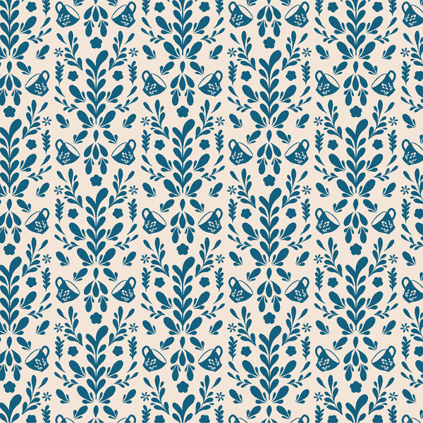

Pattern Rendering Diagnostic
If you can see the teal folk pattern in a test, it works. If the box is blank/cream, it's broken.
Test 1: Direct background-image in CSS (no custom property)
Test 2: Custom property defined in stylesheet
Test 3: Custom property via inline style
Test 4: Pseudo-element, custom property from inline style, 100% opacity
Test 5: Pseudo-element, custom property from inline style, 10% opacity
Test 6: Photo accent — background-image directly in inline style
Test 7: Photo accent — background-image via custom property
Test 8: Plain <img> tag — does the file load at all?
